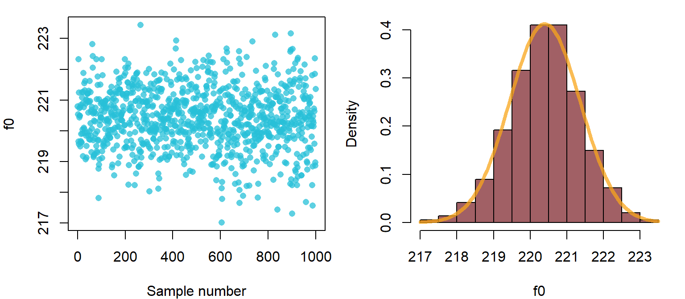
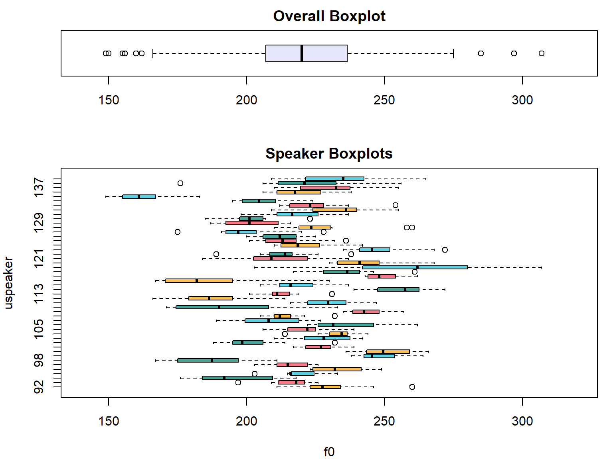
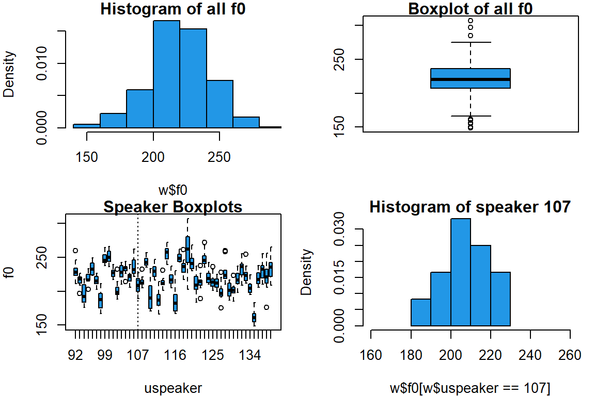
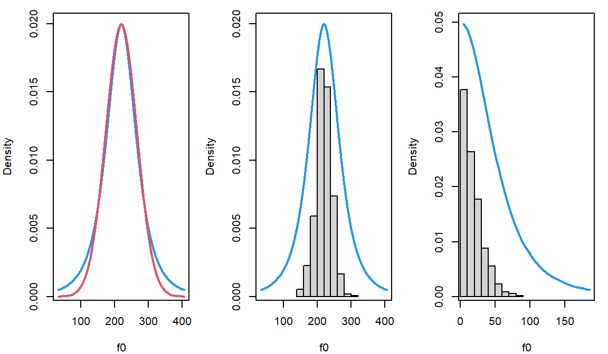

Chapter 2 Inference for a ‘single group’ of observations using a Bayesian multilevel model
In this chapter I am going to discuss how to use the brms package to estimate a population mean given a sample of data. For these models the data:
- can come from one speaker/subject or many speakers/subjects.
- each speaker/subject can contribute multiple data points.
- does not need to be ‘balanced’ or ‘complete’ across all subjects.
The ‘traditional’ designs equivalent to these models are: one-sample t-test, and repeated-measures one-way ANOVA with only two groups. However, these models won’t be discussed in the chapter below.
2.1 Data and research questions
We are going to keep analyzing the female f0 data from the Hillenbrand et al. (1995) dataset.
url1 = "https://raw.githubusercontent.com/santiagobarreda"
url2 = "/stats-class/master/data/h95_vowel_data.csv"
h95 = read.csv (url(paste0 (url1, url2)))
# select women only
w = h95[h95$type == 'w',]
# this is unique subject numbers across all groups
w$uspeaker = factor (w$uspeaker)
# select only the vector of interest
f0s = w$f0We are going to try to address the same questions we talked about last week:
What is the average f0 of the whole population likely to be?
Can we set bounds on likely mean f0 values based on the data we collected?
However, this time we are going to do this with a Bayesian multilevel model.
2.2 Estimating a single mean with the brms package
The brms Bayesian regression models package in R lets you fit Bayesian models using the STAN probabilistic programming language using R. The package is really amazing and makes Bayesian multilevel modeling easy and accessible for anyone. It also includes a lot of helper functions that making with these models very convenient.
brms should be installed in R so that the models described below will work. Make sure you have the latest version of R (and Rstudio) and the latest version of the `brms’ package installed. Sometimes using older versions can cause R to crash when fitting models.
2.2.1 The model
Model structures are expressed in R using a very specific syntax. Think of writing a model formula as writing a language within R. The good thing about learning to write models is then you can use this knowledge to describe your models in your work, and to interpret other people’s models.
The model formulas resemble regression equations to some extent, but there are some differences. Remember that regression models can be thought of like this:
\[ y = \mu + \varepsilon \tag{2.1} \]
Which means that your observed variable \(y\) is the sum of some of some average value (\(\mu\)) and some random error \(\mu\). The random error is expected to be normally distributed with some unknown standard deviation (\(\varepsilon \sim \mathcal{N}(0,\sigma)\)).
What we would really like is to understand orderly variation in \(\mu\) by breaking it up into parts (\(\mathrm{x}_{1}, \mathrm{x}_{2},...\)) when combined using some weights (\(a, b,...\)).
\[ y = a*\mathrm{x}_{1} + b*\mathrm{x}_{2} + ... + \varepsilon \tag{2.2} \]
‘Fitting’ a regression model consists of trying to ‘guess’ the values of the weighing factors (\(a\) and \(b\) above), called the model coefficients. When we are only trying to estimate a single average, we don’t have any predictors to explain variation in \(\mu\). In fact, our model structure suggests we expect no variation in \(\mu\).
Mathematically, we can’t just say ‘we have no predictor’ since everything needs to be represented by a number. As a result, we use a ‘predictor’ with a value of 1 so that our regression equation is:
\[ y = a*1 + \varepsilon \tag{2.3} \]
Now our model is trying to guess the value of a single parameter (\(a\)), and we expect this parameter to be equal to \(\mu\) since it is being multiplied by a ‘predictor’ with a constant value of 1.
This kind of model is called an ‘Intercept only’ model. Regression models are really about representing differences, differences between groups and across conditions. When you are encoding differences, you need an overall reference point. For example, saying that something is 5 miles north is only interpretable given some reference point. The ‘reference point’ used by your model is called your ‘Intercept’. Basically, our model consists only of a single reference point, the intercept. Also, when a predictor is just being multiplied by 1, we can just omit it from the regression model (but its still secretly there).
Our complete model is now:
\[ \begin{split} f0 = Intercept + \varepsilon \\ \varepsilon \sim \mathcal{N}(0,\sigma) \\ \end{split} \]
Put in English, each line in the model says the following:
f0 is equal to the sum the intercept and error.
the error is also drawn from a normal distribution with a mean of 0 and a standard deviation of \(\sigma\). This distribution represents all deviation in f0 around the mean f0 for the sample.
Generally, model formulas in R have the form:
y ~ predictor
The variable we are interested in understanding (\(y\)) goes on the left hand side, and on our predictors go on the right hand side, separated by a \(\sim\). Notice that the random term (\(\varepsilon\)) is not included. The formula above can be read as ‘y is distributed according to some predictor’, which really means "we think there is systematic variation in our y variable that can be understood by considering its joint variation with our predictor variable(s).
For intercept only models, the number 1 is included in the model formula to indicate that a single constant value is being estimated. As a result, our model formula will have the form f0 ~ 1. This model could be said out loud like “we are trying to estimate the mean of f0” or “we are predicting mean f0 given only an intercept”.
2.2.2 Calling the brm function
Below, I load the brms package, which contains the brm function. The brm function takes a model specification, data and some other information, and fits a model that estimates all the model parameters. Unless otherwise specified, brm assumes that the error component (\(\varepsilon\)) of my model is normally distributed. The first argument in the function call is the model formula, and the second argument tells the function where to find the data. The other argument tell the function to estimates a single set of samples (chains = 1) using a single processor on your CPU (cores = 1). These arguments will be discussed more later.
# To ensure predictable results in examples, I will be using the same random
# seed throughout, and resetting it before running any 'random' process.
set.seed (1)
model = brms::brm (f0 ~ 1, data = w, chains = 1, cores = 1)## Compiling Stan program...## Start sampling##
## SAMPLING FOR MODEL '98dae0f1caaef07c210aac2156c73749' NOW (CHAIN 1).
## Chain 1:
## Chain 1: Gradient evaluation took 0 seconds
## Chain 1: 1000 transitions using 10 leapfrog steps per transition would take 0 seconds.
## Chain 1: Adjust your expectations accordingly!
## Chain 1:
## Chain 1:
## Chain 1: Iteration: 1 / 2000 [ 0%] (Warmup)
## Chain 1: Iteration: 200 / 2000 [ 10%] (Warmup)
## Chain 1: Iteration: 400 / 2000 [ 20%] (Warmup)
## Chain 1: Iteration: 600 / 2000 [ 30%] (Warmup)
## Chain 1: Iteration: 800 / 2000 [ 40%] (Warmup)
## Chain 1: Iteration: 1000 / 2000 [ 50%] (Warmup)
## Chain 1: Iteration: 1001 / 2000 [ 50%] (Sampling)
## Chain 1: Iteration: 1200 / 2000 [ 60%] (Sampling)
## Chain 1: Iteration: 1400 / 2000 [ 70%] (Sampling)
## Chain 1: Iteration: 1600 / 2000 [ 80%] (Sampling)
## Chain 1: Iteration: 1800 / 2000 [ 90%] (Sampling)
## Chain 1: Iteration: 2000 / 2000 [100%] (Sampling)
## Chain 1:
## Chain 1: Elapsed Time: 0.062 seconds (Warm-up)
## Chain 1: 0.042 seconds (Sampling)
## Chain 1: 0.104 seconds (Total)
## Chain 1:By default, brms takes 2000 samples, throwing out the first 1000 and returning the last 1000. The output above shows you that the sampler is working, and tells you about the progress as it works.
This is the last time I will be actually fitting a model in the code chunks. I am going to be relying on pre-fit models that you can load after downloading from the book GitHub. Models can be found in the folder corresponding to each chapter.
## load pre fit model
model = readRDS ('2_model.RDS')2.2.3 Interpreting the model print statement
We can evaluate the model name to show the default brms model print statement:
model## Family: gaussian
## Links: mu = identity; sigma = identity
## Formula: f0 ~ 1
## Data: w (Number of observations: 576)
## Samples: 1 chains, each with iter = 2000; warmup = 1000; thin = 1;
## total post-warmup samples = 1000
##
## Population-Level Effects:
## Estimate Est.Error l-95% CI u-95% CI Rhat Bulk_ESS Tail_ESS
## Intercept 220.40 0.97 218.33 222.30 1.00 851 557
##
## Family Specific Parameters:
## Estimate Est.Error l-95% CI u-95% CI Rhat Bulk_ESS Tail_ESS
## sigma 23.24 0.69 21.99 24.61 1.00 653 550
##
## Samples were drawn using sampling(NUTS). For each parameter, Bulk_ESS
## and Tail_ESS are effective sample size measures, and Rhat is the potential
## scale reduction factor on split chains (at convergence, Rhat = 1).Typing the model name into the console and hitting enter prints the information seen above. The first part just tells you technical details that we don’t have to worry about for now (though some are obvious).
Family: gaussian
Links: mu = identity; sigma = identity
Formula: f0 ~ 1
Data: w (Number of observations: 576)
Samples: 1 chains, each with iter = 2000; warmup = 1000; thin = 1;
total post-warmup samples = 1000Next we see estimated effects for out predictors, in this case only an intercept. This is a ‘population’ level effect because is is shared by all observations in our sample, and not specific to any one observation.
Population-Level Effects:
Estimate Est.Error l-95% CI u-95% CI Rhat Bulk_ESS Tail_ESS
Intercept 220.40 0.97 218.33 222.30 1.00 851 557The information above provides the mean (Estimate) and standard deviation (Est. Error) of the posterior distribution of \(\mu\) (Intercept). The values of l-95% CI and u-95% CI represent the upper and lower ‘95% credible intervals’ for the posterior distribution of this parameter.
The x% credible interval for a parameter is the smallest interval that encloses x% of the distribution. This parameter has an x% chance (0.x probability) of falling inside the x% credible interval. So, this means that there is a 95% probability that \(\mu\) is between 218 and 222 Hz given our data and model structure.
Notice that the parameter estimate and intervals almost exactly match the estimate and intervals we obtain by referencing the theoretical likelihood function (discussed in Chapter 1):
## sample mean
mean (f0s)## [1] 220.401## theoretical quantiles for likelihood of mean
qnorm (c(0.025, 0.975), mean (f0s), sd (f0s) / sqrt (length (f0s) ) )## [1] 218.5047 222.2974Our model also provides us an estimate of the error (\(\varepsilon\)), under ‘Family Specific Parameters: sigma’. This estimate closely matches our sample standard deviation (\(s_{x}\)) estimate of 23.2. In addition, we also get a 95% credible interval for this parameter (2.5% = 21.99, 97.5% = 24.61).
Family Specific Parameters:
Estimate Est.Error l-95% CI u-95% CI Rhat Bulk_ESS Tail_ESS
sigma 23.24 0.69 21.99 24.61 1.00 653 550This last section is just boilerplate and contains some basic reminders. This text will look the same after all models.
Samples were drawn using sampling(NUTS). For each parameter, Bulk_ESS
and Tail_ESS are effective sample size measures, and Rhat is the potential
scale reduction factor on split chains (at convergence, Rhat = 1).2.2.4 Seeing the samples
In Chapter 1 I discussed that samplers (like brm, or STAN) take samples of the posterior distributions of parameters given the data and model structure. It’s helpful to see that this is quite literally what is happening, and that the print statement above just summarizes the information contained in the posterior samples.
Below I get the posterior samples from the model. We have 1000 samples, as indicated in the model output above. The first column represents the model intercept, the middle column is the error, and the third column is a statistic related to model fit.
## get posterior samples from model
samples = brms::posterior_samples (model)
str (samples)## 'data.frame': 1000 obs. of 3 variables:
## $ b_Intercept: num 221 221 220 222 220 ...
## $ sigma : num 22.1 21.9 23.2 21.9 22.9 ...
## $ lp__ : num -2635 -2635 -2634 -2637 -2634 ...## inspect values
head (samples)## b_Intercept sigma lp__
## 1 220.7860 22.06961 -2634.851
## 2 220.5312 21.93719 -2635.160
## 3 219.6445 23.22390 -2633.588
## 4 222.3286 21.93414 -2637.392
## 5 219.5626 22.87259 -2633.785
## 6 221.2339 23.08532 -2633.672I can plot the individual samples for the mean parameter on the left below. On the right I plot a histogram of the same samples, superimposed with the theoretical distribution of the likelihood. Although this is not the posterior, with so many data points we expect our posterior to be dominated by the likelihood anyways.
par (mfrow = c(1,2), mar = c(4,4,1,1))
plot (samples[,1], xlab = 'Sample number',ylab = 'f0',col=teal,pch=16)
hist (samples[,1], freq = FALSE, breaks = 20,main='',xlab='f0',col=maroon)
curve (dnorm (x, mean (f0s), sd (f0s) / sqrt (length (f0s) )), add = TRUE,
lwd = 4, col = yellow)
Recall that our model output provides information about expected values for the mean parameter:
Population-Level Effects:
Estimate Est.Error l-95% CI u-95% CI Rhat Bulk_ESS Tail_ESS
Intercept 220.40 0.97 218.33 222.30 1.00 851 557These simply correspond to the quantiles of the posterior samples!
quantile (samples[,1], c(.025, .5, .975))## 2.5% 50% 97.5%
## 218.3288 220.3997 222.3001There is no special status for these quantiles. We can check the values of other ones:
quantile (samples[,1], c(.25, .75))## 25% 75%
## 219.8043 221.0296Or even use the posterior distribution to find the probability that the mean parameter is over/under any arbitrary value:
mean (samples[,1] < 221)## [1] 0.74For example, given the calculation above we can say that there is a 0.74 probability (a 74% chance) that the mean f0 for female speakers in this population is under 221 Hz, given our data and model structure. We come to this conclusion by finding that 74% of the posterior samples of the parameter of interest are below 221 Hz.
2.3 Repeated measures data
The model we fit above is a reasonable starting point, but it has many weaknesses. For example, it does not consider the fact that our data was produced by a fixed number of speakers, sampled from a population. It does not consider the variation in f0 inherent between speakers, treating this as ‘noise’.
Importantly, our data consists of 12 productions from each speaker in our sample, meaning we have ‘repeated measures’ data. Treating repeated measures data as if it were not repeated measures data can cause problems for our inferences. This is because it can give us a warped perspective of how much variability there really is in the sample.
For example, if I told you I had 1,000,000 samples of speech from male speakers from Los Angeles, you may be confident that I can estimate the average f0 male speakers from Los Angeles very accurately. But what if I told you that all these samples were from only three different people? You know instinctively that this makes my data less reliable.
The reason repeated-measures data can cause problems is because the measurements are correlated: multiple measurements from the same person are obviously going to be related to each other. If you measure the height of a tall person today, they will still be tall tomorrow. Because of this general principle, although we have 12 productions from each of 48 female speakers, we do not actually have 576=48*12 totally independent observations in our data.
This can be seen quite clearly below. The top panel shows the distribution of all our f0 measurements. The bottom panel shows speaker boxplots (one for each speaker’s data). If we were to ‘push down’ on the bottom panel and collapse all our boxplots into a single distribution, we would end up with the boxplot in the top panel.
These boxplots shows that each speaker has their own average f0, and that their productions tend to vary around their ‘natural average. As a result, we might have closer to 46 observations (one average value per speaker) than 576. For example, the ’outliers’ around 150 Hz may seem like huge ‘errors’ in the top plot. In the bottom plot we see that these productions all come from one speaker, and actually reflect her average f0. These are not errors but systematic between-speaker variation.
par (mar = c(4,4,2,1)); layout (mat = c(1,2), heights = c(.3,.7))
boxplot (f0s, main = "Overall Boxplot", col="lavender",
horizontal = TRUE, ylim = c(140,320))
boxplot (f0 ~ uspeaker, data = w, main = "Speaker Boxplots", col=c(yellow,coral,
deepgreen,teal), horizontal = TRUE, ylim = c(140,320))
abline (h = 220.4,lty=3,col='grey',lwd=2)
2.3.1 Multilevel models
In linguistics, and many other similar fields, almost all of our data is repeated measures data. The methods most commonly-used by linguists (e.g., experiments, interviews, corpora, … etc.) yield many observations per person, and typically all involve data from multiple people/sources. As a result, the analysis of this data requires that models be able to account for within and between speaker variation in our data. Multilevel models address the correlated nature of repeated measures data by estimating multiple sources of variation simultaneously.
Repeated-measures data leads to random variation in parameters that is indistinguishable from that of our ‘data’. To a large extent, whether something is a parameter or a data point depends somewhat on your perspective. For example, consider the figure below. The top left presents a histogram of all f0 measurements, while the top right presents a boxplot of the same. The bottom left presents the speaker boxplots (one per speaker), each of which resembles the overall boxplot in the top right. We can then zoom in on a single speaker’s productions (bottom right) and produce a histogram that suggests a normal distribution reminiscent in shape to the overall aggregated data (top left).
If you are trying to estimate a speaker’s mean f0, then the individual productions might be ‘data’ and the mean can be thought of as a ‘parameter’. If you were instead only interested in the population average, maybe now your subject mean is actually just a single data point, and the population mean is actually your ‘parameter’.
par (mfrow = c(2,2), mar = c(4,4,3,1))
hist (w$f0, main = "Histogram of all f0",xlim = c(140, 290), freq = FALSE,
col=4)
boxplot (w$f0, main = "Boxplot of all f0",col=lavender)
boxplot (f0 ~ uspeaker, data = w, main = "Speaker Boxplots",col=deepgreen)
abline (v = 16,lty=3)
hist (w$f0[w$uspeaker == 107], main = "Histogram of speaker 107",
xlim = c(160, 260), freq = FALSE,col=yellow)
A multilevel model is able to simultaneously model independent variation at multiple ‘levels’. For our f0 data, these are:
The ‘upper’ level: Between-speaker variation in mean f0. This can be thought of like variation in \(\mu_{speaker}\). Speaker’s have an average f0 (\(\mu_{speaker}\)) that they produce over time. However, speakers are chosen randomly from a larger population, and so any given speaker’s \(\mu_{speaker}\) is unpredictable a priori.
The ‘lower’ level: Within-speaker variation, analogous to \(\varepsilon\). When an individual speaker produces speech, their productions will vary around their average from token to token. Our model cannot explain this and so this is ‘error’
As seen in the figure above, the variation at the lower and upper levels are analogous. Just like individual speakers will rarely have an average f0 exactly like the population average, individual speakers will rarely produce f0 values exactly at their speaker average. Importantly, variation at the two levels is independent and logically distinct: within-speaker variation can be small or large independently of whether between-speaker variation is large or small.
Basically, each subject’s productions form a little normal distribution around their average, and the mix of these little distributions results in the overall ‘big’ distribution of data across all subjects. By using multilevel models, we can estimate the effects of multiple sources of variation at the same time.
2.4 Estimating a multilevel model with brms
We are now going to fit the same model we fit above, but with a structure that reflects the repeated-measures nature of the data.
2.4.1 The model
To specify a multilevel model, you need to write a slightly more complicated model formula. This explanation assumes that you have a dataframe or matrix where one column contains the variable you are interested and predicting (in this case f0), and another column contains a vector containing unique labels for each speaker or source of data (in this case a unique speaker label uspeaker).
To indicate that your model contains an ‘upper’ level where you have clusters of data coming from different individuals, you have to put another model inside your main model!
Before, the model formula looked like this:
f0 ~ 1
which meant ‘predict f0 using only an intercept’. Now the model formula will look like this:
f0 ~ 1 + ( 1 | uspeaker)
When you place a predictor in the formula in parenthesis, on the right-hand-side of a pipe, like this ( | predictor ), you tell brm that you expect data to be clustered according to each category represented in the grouping vector. In this case, we are telling brm that each unique speaker is a cluster of data. Whatever you put in the left-hand-side of the parentheses ( in here | predictor ) is the model for each subcluster!
So what does this model formula mean: f0 ~ 1 + ( 1 | uspeaker)? It tells brm: predict f0 based on only an intercept, and also calculate a separate intercept for each speaker. Effectively, this model formula is telling brm to figure out all the information presented in the figures above.
This regression model is now something like this:
\[ y = \mu_{overall} + \mu_{speaker}+\varepsilon \tag{2.4} \]
Recall that when we predict an intercept in a regression model, we actually perform the following decomposition \(\mu=parameter*1\). This means that we are actually just fitting a parameter that we expect to equal the value of the \(\mu\) we are interested in.
Below, where I have decomposed each \(\mu\) into its constituent ‘predictors’ (1) and parameters (\(a, b\)).
\[ y = a*1 + b_{speaker}*1 + \varepsilon \tag{2.5} \]
In addition to the coefficient estimating the overall intercept (\(a\)), we know have another term \(b_{speaker}\). This coefficient is actually a set of coefficients since it has a different value for each speaker (its a vector). It has a different value for each speaker because it will reflect variation in \(\mu_{speaker}\). However, \(\mu_{speaker}\) is a random variable since it reflects the random average f0 of each person drawn from the population. If \(\mu_{speaker}\) behaves like a random variable, then the coefficients that reflect this value in our model (\(b_{speaker}\)) will behave in the same way.
This means that actually our model has two random variables. The first one is the error term \(\varepsilon \sim \mathcal{N}(0,\sigma_{error})\), which has a mean of 0 and a standard deviation which we can refer to as \(\sigma_{error}\). The second is the random, speaker-specific intercepts, or by-speaker intercepts, that can also be thought of as random draw from a normal distribution.
A careful consideration of the model in equation 2.4 suggests that this model wouldn’t really work. If the overall mean is 220 Hz and a speaker’s average is 230, this would suggest a predicted average of 450 (\(\mu_{overall} + \mu_{speaker}\)) for this speaker. Clearly that is not how the model should be working.
Recall that I previously said that regression models encode differences. Our model already encodes the overall data average in the \(\mu_{overall}\) parameter. Thus, the speaker-specific averages only need to contain information about differences to this overall average. As a result, the model parameters for mean f0 across all speakers will be centered at 0 (i.e., the average), and will tend to be normally distributed with a population-specific standard deviation.
Since our model parameters represent speaker-specific deviations rather than their actual mean f0s, people often use this symbol, \(\gamma\), for them instead of \(\mu\), where \(\gamma = \mu_{speaker} - \mu_{overall}\). We can show the expected distribution of this variable below, where \(\sigma_{speakers}\) is a population-specific standard deviation term.
\[ \gamma_{uspeaker} \sim \mathcal{N}(0,\sigma_{speakers}) \tag{2.6} \]
Our overall model is now as shown below, made specific for the data we have, and using expected parameter names.
\[ \begin{split} f0 = Intercept + \gamma_{uspeaker} + \varepsilon \\ \gamma_{uspeaker} \sim \mathcal{N}(0,\sigma_{speakers}) \\ \varepsilon \sim \mathcal{N}(0,\sigma_{error}) \\ \end{split} \]
Each line in the model says the following:
f0 is equal to the sum the intercept, a speaker-specific deflection from the intercept, and error.
the speaker intercepts are drawn from a normal distribution with a mean of 0 and a standard deviation of \(\sigma_{speakers}\). This distribution represents the random variation of speakers around the average f0 for the population.
the error is also drawn from a normal distribution with a mean of 0 and a standard deviation of \(\sigma_{error}\). This distribution represents the random within-speaker variation of productions around the average f0 for the speaker.
There is a very important difference in how the initial and final models we fit view and partition the variation in our model. The initial model we fit viewed the variation in the model like this:
\[ \sigma_{total} = \sigma_{error} \tag{2.7} \]
In other words, all variation was error. We don’t know why values vary from the mean. Our multilevel model views the variation in our data like this:
\[ \sigma_{total} = \sigma_{speaker} + \sigma_{error} \tag{2.8} \]
It sees only some of the variation in data as error. Basically, from the perspective of this multilevel model, the variation in the data is a combination of random (but systematic) between-speaker variation, and random within-speaker variation.
2.4.2 Fitting the model
We can fit a model with a formula that appropriately specifies the clustering we expect in our data. As a result, this model can estimate both between- and within-speaker variability.
set.seed (1)
multilevel_model =
brm (f0 ~ (1|uspeaker), data = w, chains = 1, cores = 1)## loand and inspect pre-fit model
multilevel_model = readRDS ("2_multilevel_model.RDS")
multilevel_model## Family: gaussian
## Links: mu = identity; sigma = identity
## Formula: f0 ~ (1 | uspeaker)
## Data: w (Number of observations: 576)
## Samples: 1 chains, each with iter = 2000; warmup = 1000; thin = 1;
## total post-warmup samples = 1000
##
## Group-Level Effects:
## ~uspeaker (Number of levels: 48)
## Estimate Est.Error l-95% CI u-95% CI Rhat Bulk_ESS Tail_ESS
## sd(Intercept) 20.19 2.10 16.65 25.06 1.00 135 192
##
## Population-Level Effects:
## Estimate Est.Error l-95% CI u-95% CI Rhat Bulk_ESS Tail_ESS
## Intercept 220.39 3.10 214.49 226.13 1.03 51 108
##
## Family Specific Parameters:
## Estimate Est.Error l-95% CI u-95% CI Rhat Bulk_ESS Tail_ESS
## sigma 12.54 0.39 11.83 13.34 1.01 400 700
##
## Samples were drawn using sampling(NUTS). For each parameter, Bulk_ESS
## and Tail_ESS are effective sample size measures, and Rhat is the potential
## scale reduction factor on split chains (at convergence, Rhat = 1).This new model contains one new chunk its print statement:
Group-Level Effects:
~uspeaker (Number of levels: 48)
Estimate Est.Error l-95% CI u-95% CI Rhat Bulk_ESS Tail_ESS
sd(Intercept) 20.19 2.10 16.65 25.06 1.00 135 192This sections contains information about the standard deviation of between-speaker averages (\(\mu_{speaker}\)) in the sample. We can see that the information provided by brms is quite similar to what we can estimate directly using our data. However, brms does this all for us, in addition to giving us a lot more information.
## find mean f0 for each speaker
speaker_means = aggregate (f0 ~ uspeaker, data = w, FUN = mean)
## find the within speaker variance. This is the within-talker 'error'.
speaker_vars = aggregate (f0 ~ uspeaker, data = w, FUN = var)
## the mean of the speaker means corresponds to our overall mean estimate
mean (speaker_means$f0)## [1] 220.401## sd(Intercept) in the model reflects the amount of variation in talker
## intercepts. This is the between speaker variation in our model. See how it is
## similar to the sd of the actual speaker means.
sd (speaker_means$f0)## [1] 20.07397## sigma in the model reflects the amount of variation in talker intercepts.
## This is the between speaker variation in our model.
sqrt (sd (speaker_vars$f0))## [1] 12.42719The overall mean f0 in our data (220.4) corresponds quite well to our model estimate of 220.4. This reflects the central location of the overall distribution below (the horizontal line in the figure below). The standard deviation of the speaker means (Intercept = 20.1) is again very similar to our model estimate (sd(Intercept) = 20.1). This reflects the average distance from each speaker’s average, and the overall average. Finally, the average of the within speaker standard deviation in our data (12.4) corresponds closely to our model’s error estimate (sigma = 12.5). This reflects the average spread of each speaker’s data relative to their own mean, within their own little boxplot.
par (mfrow = c(1,1), mar = c(4,4,2,1))
boxplot (f0 ~ uspeaker, data = w, main = "Speaker Boxplots",col=c(yellow,coral,
deepgreen,teal))
abline (h = 220.4, lwd=3,lty=3)
2.5 Checking model convergence
Remember that our model parameter estimates consist of a set of samples from the posterior distribution of a parameter. If we don’t take enough of these samples, our parameter estimates will be unreliable.
For this reason, it’s important to look at the ESS values (the ‘expected sample size’), and the ‘Rhat’ values provided by brm. ESS tells you about how many independent samples you have taken from the likelihood. Bulk ESS is how many samples the sampler took in the thick part of the density, and Tail ESS reflects how much time the sampler spent in the thin part, the ‘tails’. Rhat tells you about whether your ‘chains’ have converged (more on this later). As noted above, values of Rhat near 1 are good, and values higher than around 1.1 are a bad sign.
We haven’t really taken many samples here, so we can’t be confident in our parameter estimates. Ideally we would like several hundred samples (at least) for mean estimates, and thousands to be confident in the 95% confidence intervals.
To get more samples we can run the model longer, or we can use more chains. A chain is basically a separate set of samples for your parameter values. Just imagine you had estimated the model 4 times in a row and mixed your estimations. A model can be fit in parallel across several chains, and then the estimates can be merged across chains. When you do this across multiple cores, you can get N times as many samples when you use N cores. Since many computers these days have 4-8 (or more) cores, we can take advantage of parallel processing to fit models faster.
Below, I refit the same model from above but run it on 4 chains, and on 4 cores at once. This doesn’t take any longer but it does give us a higher ESS. Just make sure you leave a couple of cores free on your computer when you fit a model!
set.seed (1)
multilevel_multicore =
brm (f0 ~ 1 + (1|uspeaker), data = w, chains = 4, cores = 4)## load and inspect pre-fit model
multilevel_multicore = readRDS ('2_multilevel_multicore.RDS')
multilevel_multicore## Family: gaussian
## Links: mu = identity; sigma = identity
## Formula: f0 ~ 1 + (1 | uspeaker)
## Data: w (Number of observations: 576)
## Samples: 4 chains, each with iter = 2000; warmup = 1000; thin = 1;
## total post-warmup samples = 4000
##
## Group-Level Effects:
## ~uspeaker (Number of levels: 48)
## Estimate Est.Error l-95% CI u-95% CI Rhat Bulk_ESS Tail_ESS
## sd(Intercept) 20.22 2.19 16.54 25.19 1.02 345 615
##
## Population-Level Effects:
## Estimate Est.Error l-95% CI u-95% CI Rhat Bulk_ESS Tail_ESS
## Intercept 220.47 2.91 214.67 226.14 1.02 228 543
##
## Family Specific Parameters:
## Estimate Est.Error l-95% CI u-95% CI Rhat Bulk_ESS Tail_ESS
## sigma 12.54 0.39 11.81 13.34 1.00 3427 2943
##
## Samples were drawn using sampling(NUTS). For each parameter, Bulk_ESS
## and Tail_ESS are effective sample size measures, and Rhat is the potential
## scale reduction factor on split chains (at convergence, Rhat = 1).If we compare the ESS for this new model to the previous model, we see that using 4 chains has substantially increased our ESS, without taking up any more computing time.
One final tweak that I will be using going forward is to ‘thin’ samples. Notice that we have collected ‘total post-warmup samples = 4000’. This means our model has 4000 samples for every parameter in the model. However, we have only about 400 ‘effective samples’ to show for it for some parameters of interest. This means that a lot of our samples are basically dead weight, taking up space and slowing down computations for no good reason.
Sometimes consecutive samples can be too similar and so don’t given you that much independent information. A way to fix this is to run longer chains and keep only every nth one. This lets your models be smaller while containing approximately the same information.
To do this you have to set the iter, warmup and thin parameters. You will keep every sample after the warmup is done, up to the iter maximum. So if iter=3000 and warmup=1000 you will end up with 2000 samples. After this, you keep only one every thin samples. Basically, you will end up with \((iter-warmup) / thin\) samples per chain.
Below, I ask for 11,000 sample per chain, 10,000 post warm-up. However, since I plan to keep only 1/10, I will have 1000 per core, so 4000 samples in total. However, despite having the same number of samples as the multilevel_multicore, the ESS for this model is much higher for important parameters such as the model intercept.
set.seed (1)
multilevel_thinned =
brm (f0 ~ 1 + (1|uspeaker), data = w, chains = 4, cores = 4,
warmup = 1000, iter = 11000, thin = 10)## load and inspect pre-fit model
multilevel_thinned = readRDS ('2_multilevel_thinned.RDS')
multilevel_thinned## Family: gaussian
## Links: mu = identity; sigma = identity
## Formula: f0 ~ 1 + (1 | uspeaker)
## Data: w (Number of observations: 576)
## Samples: 4 chains, each with iter = 11000; warmup = 1000; thin = 10;
## total post-warmup samples = 4000
##
## Group-Level Effects:
## ~uspeaker (Number of levels: 48)
## Estimate Est.Error l-95% CI u-95% CI Rhat Bulk_ESS Tail_ESS
## sd(Intercept) 20.06 2.23 16.24 24.98 1.00 2775 3392
##
## Population-Level Effects:
## Estimate Est.Error l-95% CI u-95% CI Rhat Bulk_ESS Tail_ESS
## Intercept 220.40 2.95 214.57 226.19 1.00 1987 2625
##
## Family Specific Parameters:
## Estimate Est.Error l-95% CI u-95% CI Rhat Bulk_ESS Tail_ESS
## sigma 12.54 0.38 11.81 13.31 1.00 3908 3891
##
## Samples were drawn using sampling(NUTS). For each parameter, Bulk_ESS
## and Tail_ESS are effective sample size measures, and Rhat is the potential
## scale reduction factor on split chains (at convergence, Rhat = 1).2.6 Specifying prior probabilities
In Chapter 1 we discussed that Bayesian models require that prior probabilities be specified for all parameters. You may have noticed that to this point I haven’t discussed priors at all.
If you don’t specify prior probabilities for your parameters, brm will use a ‘flat’ prior for all parameters. When you do this, you are basically relying only on the likelihood for your analysis. You are also telling your model that, a priori, any value of average f0 is equally believable. Empirically, this is false. As a practical matter this can cause problems for samplers like brm (STAN actually). Basically, the sampler has a harder time figuring out the most likely values when you tell it to look anywhere from positive to negative infinity. Even a bit of guidance can help.
brms makes it really easy to specify prior probabilities for specific parameters or whole groups of parameters. First we figure out the overall mean and the standard deviation of the data.
mean(f0s)## [1] 220.401sd(f0s)## [1] 23.22069In the example below, I use this information to set reasonable bounds on the parameters in the model. I do this by class of parameter:
- Intercept: this is a unique class, only for intercepts.
- b: this is for all the non-intercept predictors. There are none in this model.
- sd: this is for all standard deviation parameters. In our example this is
sd(Intercept)foruspeaker(\(\sigma_{speaker}\)), andsigma(\(\sigma_{error}\)).
Both priors below use a ‘t’ distribution, which is just like a normal distribution but it is more pointy, and has more density in the outer parts of the distribution. I use this because it has good properties, but you can use normal priors, or any other priors that you think work for your model. Rather than focusing on the mathematical properties of priors, the most important thing is that their shape reflect the distribution of credible parameter values a priori (before you conducted your experiment).
The format for the priors looks like this student_t(nu, mean, sd), where nu is a parameter that determines how pointy the distribution is, and mean and sd are the same mean and standard deviation parameters from the normal distribution. The nu parameter ranges from 1 to infinity, and large numbers result in a more normal-like distribution.
So, for the overall intercept (\(\mu_{overall}\)) I am using a prior with the same mean as the data mean, and a standard deviation that is twice as large as the data standard deviation. For both the model standard deviation terms (\(\sigma_{error}, \sigma_{speaker}\)) I am using a t distribution centered at 0 (explained below), with a standard deviation twice as large as the data standard deviation.
set.seed (1)
multilevel_priors =
brm (f0 ~ 1 + (1|uspeaker), data = w, chains = 4, cores = 4,
warmup = 1000, iter = 11000, thin = 10,
prior = c(set_prior("student_t(3, 220.4, 46.4)", class = "Intercept"),
set_prior("student_t(3, 0, 46.4)", class = "sd")))## load and inspect pr-fit model
multilevel_priors = readRDS ('2_multilevel_priors.RDS')
multilevel_priors## Family: gaussian
## Links: mu = identity; sigma = identity
## Formula: f0 ~ 1 + (1 | uspeaker)
## Data: w (Number of observations: 576)
## Samples: 4 chains, each with iter = 11000; warmup = 1000; thin = 10;
## total post-warmup samples = 4000
##
## Group-Level Effects:
## ~uspeaker (Number of levels: 48)
## Estimate Est.Error l-95% CI u-95% CI Rhat Bulk_ESS Tail_ESS
## sd(Intercept) 20.19 2.24 16.29 25.06 1.00 3114 3663
##
## Population-Level Effects:
## Estimate Est.Error l-95% CI u-95% CI Rhat Bulk_ESS Tail_ESS
## Intercept 220.42 2.97 214.44 226.38 1.00 1796 2841
##
## Family Specific Parameters:
## Estimate Est.Error l-95% CI u-95% CI Rhat Bulk_ESS Tail_ESS
## sigma 12.54 0.39 11.81 13.34 1.00 3968 3972
##
## Samples were drawn using sampling(NUTS). For each parameter, Bulk_ESS
## and Tail_ESS are effective sample size measures, and Rhat is the potential
## scale reduction factor on split chains (at convergence, Rhat = 1).In the left panel below (plot code at end of chapter) I compare the t distribution we used (blue) to the equivalent normal distribution (red). It is clear that the t distribution can tolerate more extreme values because of its ‘fatter’ tails. As we will discuss later, using t distributions can make our models more robust to outliers. This is really important in linguistics where subjects/speakers sometimes do weird stuff!
In the middle panel we compare this prior to the data, and see that the prior distribution is much broader (more vague) than the data distribution. The right panel compares the prior for the standard deviation parameters to the absolute value of the centered f0 data. This presentation shows how far each observation is from the mean f0 (at 220 Hz). Again, the prior distribution we have assigned for these parameters is much larger than the variation in the data. As a result, neither of these priors is going to have much of an effect on our parameter estimates.

If we compare the output of this model to multilevel_thinned, we see that specifying a prior has has no noticeable effect on our results. This is because the prior matters less and less when you have a lot of data, and because we have set wide priors that are appropriate (but vague) given our data. Although the priors may not matter much for models as simple as these, they can be very important when working with more complex data, and are a necessary component of Bayesian modeling.
2.7 Answering our research questions
Let’s return again to the research questions I posed initially:
What is the average f0 of the whole population likely to be?
Can we set bounds on likely mean f0 values based on the data we collected?
And we can compare the answers provided to this question by our initial and final models.
model## Family: gaussian
## Links: mu = identity; sigma = identity
## Formula: f0 ~ 1
## Data: w (Number of observations: 576)
## Samples: 1 chains, each with iter = 2000; warmup = 1000; thin = 1;
## total post-warmup samples = 1000
##
## Population-Level Effects:
## Estimate Est.Error l-95% CI u-95% CI Rhat Bulk_ESS Tail_ESS
## Intercept 220.40 0.97 218.33 222.30 1.00 851 557
##
## Family Specific Parameters:
## Estimate Est.Error l-95% CI u-95% CI Rhat Bulk_ESS Tail_ESS
## sigma 23.24 0.69 21.99 24.61 1.00 653 550
##
## Samples were drawn using sampling(NUTS). For each parameter, Bulk_ESS
## and Tail_ESS are effective sample size measures, and Rhat is the potential
## scale reduction factor on split chains (at convergence, Rhat = 1).multilevel_priors## Family: gaussian
## Links: mu = identity; sigma = identity
## Formula: f0 ~ 1 + (1 | uspeaker)
## Data: w (Number of observations: 576)
## Samples: 4 chains, each with iter = 11000; warmup = 1000; thin = 10;
## total post-warmup samples = 4000
##
## Group-Level Effects:
## ~uspeaker (Number of levels: 48)
## Estimate Est.Error l-95% CI u-95% CI Rhat Bulk_ESS Tail_ESS
## sd(Intercept) 20.19 2.24 16.29 25.06 1.00 3114 3663
##
## Population-Level Effects:
## Estimate Est.Error l-95% CI u-95% CI Rhat Bulk_ESS Tail_ESS
## Intercept 220.42 2.97 214.44 226.38 1.00 1796 2841
##
## Family Specific Parameters:
## Estimate Est.Error l-95% CI u-95% CI Rhat Bulk_ESS Tail_ESS
## sigma 12.54 0.39 11.81 13.34 1.00 3968 3972
##
## Samples were drawn using sampling(NUTS). For each parameter, Bulk_ESS
## and Tail_ESS are effective sample size measures, and Rhat is the potential
## scale reduction factor on split chains (at convergence, Rhat = 1).Our initial model (model) and our final model (multilevel_priors) agree on what the average f0 is. However, they disagree on a credible interval for that parameter. Our initial model did not specify information about repeated measures. This causes our model to think that it has more independent observations than it does, and so it returns an overly-precise estimate.
Another difference is that the final model has a much smaller sigma parameter (12.5 vs 23.2). This indicates that the error (\(\varepsilon\)) is much smaller in the final model than in the initial model. Keep in mind that ‘error’ is just what your model can’t explain. Our final model explains much more and so there is less error. The reduced error is a direct result of the fact that the final model splits random variation up into between-speaker and within-speaker components, estimating the between-speaker variation (\(sigma_{speaker}\)) to be about 20 Hz.
Usually, when I report parameters I provide the mean and standard deviations of the posterior distribution, in addition to the bounds of the 95% credible interval of the parameter. Based on the result of our final model, I think a thorough description of the general properties of our data might go something like:
"Based on our model the average f0 produced by adult females in Michigan is likely to be 220 Hz (s.d. = 2.97, 95% CI = 214.4, 226.4). However, consistent between-speaker variation averages about 20 Hz (s.d. = 2.24, 95% CI = 16.29, 25.06), meaning that we can expect the average f0 produced by individuals to deviate substantially from 220 Hz. Finally, the standard deviation of production error was about 12.5 Hz (s.d. = 0.39, 95% CI = 11.81, 13.34) indicating that the amount of random between speaker variation in production is about half the magnitude of the stable, between-speaker differences in f0.
I am including the speaker boxplots below because I think this image basically presents the same information as the paragraph above, but in visual form. In general, any data relationship or result can be presented in a figure, and the relationships presented in a figure can also be expressed as a mathematical model.
When you are thinking about the relationships in your data, or that you expect in your data, its a good idea to think: what kind of picture could illustrate this relationship? Conversely, if you see a figure of your results that you feel really expresses something interesting about your data you should think, how can these relationships be represented in a model?
par (mfrow = c(1,1), mar = c(4,4,2,1))
boxplot (f0 ~ uspeaker, data = w, main = "Speaker Boxplots",col=c(yellow,coral,
deepgreen,teal))
abline (h = 220.4, lwd=3,lty=3)
2.8 Plot Code
Plot for comparison of prior distributions with f0 data
# get t density
x1 = seq (-4,4,.1)
y1 = dt (x1, 3); y1 = y1 / max (y1) / 50
x2 = 220+(x1*46.4)
y2 = dnorm (x2, 220, 46.4); y2 = y2 / max (y2) / 50
par (mfrow = c(1,3), mar = c(4,4,1,1))
## plot t
plot (x2, y1, type = 'l', lwd = 2, ylab = 'Density', xlab = 'f0', col = 4)
## compare to equivalent normal
lines (x2, y2, lwd=2,col=2)
## plot t
plot (x2, y1, type = 'l', lwd = 2, ylab = 'Density', xlab = 'f0', col = 4)
## compare to equivalent normal
hist (f0s, add = TRUE, freq = FALSE)
## plot prior for standard deviations
x3 = x2 - mean (x2)
y3 = dt (x1, 3); y3 = y3 / max (y3) / 20
plot (x3[x3>0], y3[x3>0], type = 'l', lwd = 2, ylab = 'Density',
xlab = 'f0', col = 4)
hist (abs (f0s - mean (f0s)), add = TRUE, freq = FALSE)